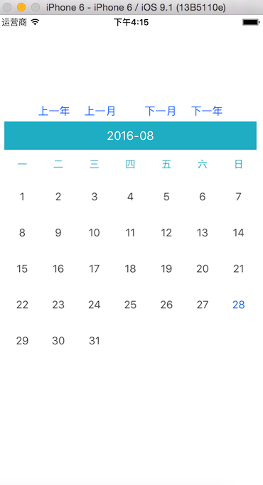
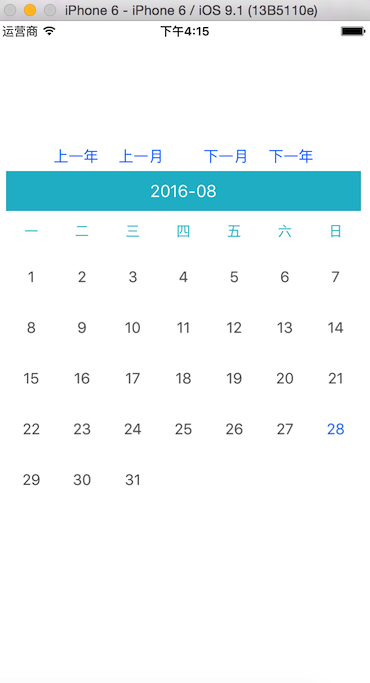

效果图

使用方法
通过类方法创建日历，添加到控制器view即可。可以自定义控制size
1 | CGRect frame = CGRectMake(10, 150, [UIScreen mainScreen].bounds.size.width - 2 * 10, [UIScreen mainScreen].bounds.size.width - 2 * 10 +50); |
提供接口
能够动态查看任何一个月的日历
1 | /** 显示下一月日历 */ |

通过类方法创建日历，添加到控制器view即可。可以自定义控制size
1 | CGRect frame = CGRectMake(10, 150, [UIScreen mainScreen].bounds.size.width - 2 * 10, [UIScreen mainScreen].bounds.size.width - 2 * 10 +50); |
能够动态查看任何一个月的日历
1 | /** 显示下一月日历 */ |